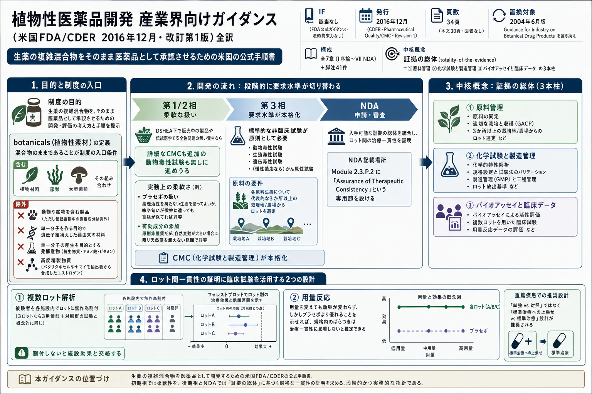

植物性医薬品開発 産業界向けガイダンス（米国FDA/CDER 2016年12月・改訂第1版）全訳

<!-- 方針: 全訳。原本は米国政府（FDA/CDER）が発行した公的ガイダンス文書でパブリックドメイン。全7章の節構成（I〜VII および A/B/C… 1/2/3…）をすべて保持し、本文・箇条書き・表・脚注をすべて日本語化した。原本に図は無い（本文中の表1点＝製剤の定量的記述の例は転記した）。参照される連邦規則（21 CFR）・FD&C法の条番号・ICHガイドライン番号は原文どおり保持する。「> 補足:」は訳者注。 -->
この文書について
- 原題: Botanical Drug Development — Guidance for Industry
- 発行: 米国保健福祉省 食品医薬品局（FDA） 医薬品評価研究センター（CDER）
- 発行時期: 2016年12月
- 分類: Pharmaceutical Quality/CMC（医薬品品質／化学・製造・品質管理）
- 版: Revision 1（改訂第1版）
- 分量: 全34ページ（本文30ページ、図表なし）
- 入手先: FDA Drugs guidance ウェブページ
- 作成: 医薬品品質部（OPQ）、新薬部（OND）、トランスレーショナルサイエンス部、医療政策部のスタッフから成るワーキンググループが作成（脚注1）
本ガイダンスは拘束力のない推奨事項を含む（Contains Nonbinding Recommendations） 本ガイダンスは、本主題に関する食品医薬品局（FDA または当局）の現在の考え方を示すものである。いかなる者に対しても権利を確立するものではなく、FDA および公衆を拘束するものではない。 適用される制定法および規則の要件を満たすのであれば、代替的なアプローチを用いることができる。 代替的アプローチについて議論するには、表紙に記載された本ガイダンスの担当 FDA 部署に連絡されたい。
補足: FDA の「ガイダンス（guidance）」という文書形式の位置づけを押さえておきたい。法令（法律・規則）ではなく、当局の現在の考え方を示す文書であり、法的拘束力を持たない。ただし実務上は、これに沿わない開発計画は説明責任を負うことになるため、事実上の標準として機能する。 本文中で頻出する 「should」は「推奨される／〜すべきである」であって「required（必須）」ではない——このことがガイダンス本文（第I章末尾）で明示的に断られている。本ページの訳でもこの区別を保ち、「should」は「〜すべきである／〜が推奨される」、「must」は「〜しなければならない」 と訳し分けた。must が使われている箇所は、根拠となる連邦規則（21 CFR）の条番号が併記されている。
目次（原文の構成）
| 章 | 表題 | 頁 |
|---|---|---|
| I | 序論（INTRODUCTION） | 1 |
| II | 背景（BACKGROUND） | 2 |
| III | 一般的規制アプローチ（GENERAL REGULATORY APPROACHES） | 2 |
| III.A | OTC 医薬品モノグラフのもとでの植物性医薬品の販売 | 3 |
| III.B | NDA のもとでの植物性医薬品の販売 | 4 |
| IV | IND のもとでの植物性医薬品開発 | 4 |
| V | 第1相・第2相臨床試験のための IND | 5 |
| V.A | 製品の記述とこれまでのヒトでの経験の文書化 | 6 |
| V.B | 化学・製造・品質管理（CMC） | 8 |
| V.C | 非臨床薬理／毒性 | 13 |
| V.D | 臨床薬理 | 14 |
| V.E | 臨床上の考慮事項 | 15 |
| VI | 第3相臨床試験のための IND | 15 |
| VI.A | 後期開発における一般的規制上の考慮事項 | 15 |
| VI.B | 製品の記述とこれまでのヒトでの経験の文書化 | 16 |
| VI.C | 化学・製造・品質管理 | 17 |
| VI.D | 非臨床安全性評価 | 18 |
| VI.E | 臨床薬理 | 20 |
| VI.F | 臨床上の考慮事項 | 20 |
| VI.G | 配合剤規制の適用可能性 | 22 |
| VII | 植物性医薬品の NDA | 23 |
| VII.A | 製品の記述とこれまでのヒトでの経験の文書化 | 23 |
| VII.B | 品質管理 | 24 |
| VII.C | 非臨床安全性評価 | 28 |
| VII.D | 臨床薬理 | 28 |
| VII.E | 有効性・安全性の臨床的証拠 | 28 |
| VII.F | 治療的一貫性を確保するための証拠 | 29 |
| VII.G | 市販後の考慮事項 | 30 |
I. 序論（INTRODUCTION）
本ガイダンスは、新薬承認申請（NDA）で提出される植物性医薬品（botanical drugs）の適切な開発計画に関する医薬品評価研究センター（CDER）の現在の考え方と、植物性医薬品の将来の NDA 提出を裏付ける治験薬申請（IND）の提出に関する具体的な推奨事項を記述する。
加えて、本ガイダンスは植物性医薬品のための一般用医薬品（OTC）モノグラフ制度に関する一般的情報を提供する。
本ガイダンスは、生物学的製剤承認申請（BLA）のもとで販売される植物性医薬品に固有の推奨を提供することを意図してはいないが、本ガイダンスに記述される多くの科学的原則はこれらの製品にも適用されうる。
本ガイダンスは、植物性医薬品の固有の性質のゆえに、当局が非植物性医薬品——合成、半合成、その他の高度に精製された、あるいは化学的に修飾された医薬品（微生物由来の抗生物質を含む）——に適用するものとは異なる規制方針を適用することが適切であると判断するいくつかの領域について、具体的に論じる。
本ガイダンスは植物性医薬品に固有の考慮事項に焦点を当てるため、植物性・非植物性の両方に適用される方針と推奨は概して本文書では扱わない。読者は適切な情報について他の FDA ガイダンス文書を参照されたい。
本ガイダンスは、2004年6月に発行された Guidance for Industry on Botanical Drug Products を置き換える（脚注2）。植物性医薬品開発への一般的アプローチはそれ以来変わっていない。しかし、植物性医薬品についての理解の向上と、これらの医薬品の NDA・IND の審査で得られた経験に基づき、具体的な推奨事項が修正され、植物性医薬品の後期開発と NDA 提出により良く対応するために新しい節が追加された。
脚注2: 2015年8月の連邦官報（80 FR 49240）において、我々は Botanical Drug Products を改訂したガイダンス案を発行し意見を求めた。本ガイダンスは、その2015年8月のガイダンス案——同じく Botanical Drug Development と題する——を最終化し、2004年6月の最終ガイダンスを置き換えるものである。
一般に、FDA のガイダンス文書は法的に強制可能な責任を確立しない。 その代わり、ガイダンスはある主題に関する当局の現在の考え方を記述するものであり、具体的な規制上あるいは制定法上の要件が引用されていない限り、推奨としてのみ捉えられるべきである。 当局のガイダンスにおける「should」という語の使用は、何かが提案あるいは推奨されているが、要求されてはいないことを意味する。
II. 背景（BACKGROUND）
本文書の目的上、「botanicals（植物性素材）」という語は、植物材料、藻類、大型菌類、およびそれらの組み合わせを含む製品を意味する。
以下は含まれない。
- 動物あるいは動物の部位（例：昆虫や環形動物）および/または鉱物を含む製品。 ただし、これらが伝統的な植物性調製物（例：中医薬、アーユルヴェーダ医学）における微量成分である場合を除く。
- 単一の分子的実体を産生する意図で遺伝子改変された植物種に由来する材料（例：組換え DNA 技術やクローニングによるもの）。
- 酵母・細菌・植物細胞・その他の微小生物の発酵によって産生される製品（基質として用いられる植物を含む）。ただし、発酵工程の目的が単一の分子的実体（例：抗生物質、アミノ酸、ビタミン）を産生することである場合。
- 高度に精製された物質。 天然に存在する起源に由来するもの（例：パクリタキセル）、あるいは化学的に修飾されたもの（例：ヤマイモ抽出物から合成されたエストロゲン）のいずれも含む。
植物材料が伝統的な栽培あるいは育種技術に由来する場合（例：遺伝子改変されていない場合）、あるいは原料生薬の発酵が、複数の活性成分から成る天然混合物である製品を製造するための製造工程の一部である場合（脚注3）には、本ガイダンスの適切な規定が適用される。
脚注3: 活性成分（active constituents） とは、植物性医薬品の意図された薬理活性あるいは治療効果に有意に寄与する、植物性原薬中の化学成分である。
製剤が、植物性原薬を (1) 合成あるいは高度精製された医薬品、または (2) バイオテクノロジー由来あるいはその他の天然由来医薬品と組み合わせて含む場合、本ガイダンスは概して当該製品の植物性部分に適用されうる。
補足: この除外リストが制度の輪郭を決めている。 4つの除外はいずれも「単一分子になってしまったものは対象外」という一貫した原理で貫かれている。 - パクリタキセル → 高度精製された単一化合物なので対象外（通常の新薬として開発する） - 発酵で作る抗生物質・アミノ酸・ビタミン → 単一分子が目的なので対象外 - 単一分子を作る目的の遺伝子組換え植物 → 対象外 逆に、発酵を経ていても「複数の活性成分から成る天然混合物」が目的なら対象になる。この一文は、神麹（しんぎく）や紅麹のような発酵生薬を制度に取り込む余地を残している。 動物・鉱物についての扱いも実務的に重要である。「伝統的な植物性調製物における微量成分（minor component）である場合」は除外されない——つまり、牡蠣（ボレイ）や竜骨、地竜（ミミズ）を含む漢方処方でも、それらが微量成分にとどまるなら本ガイダンスの対象になりうる。 前掲の Wu ら2020年の総説が「ミミズなどの動物部位や鉱物が植物性配合剤の一部となりうる」と書いているのは、この規定を指している。
III. 一般的規制アプローチ（GENERAL REGULATORY APPROACHES）
植物性製品は、連邦食品・医薬品・化粧品法（FD&C 法）のもとで、食品（栄養補助食品を含む）、医薬品（生物学的医薬品を含む）、医療機器、あるいは化粧品として分類されうる。
ある物品が食品・医薬品・医療機器・化粧品のいずれであるかは、その大部分が意図された用途（intended use）に依存する（脚注4）。ただし製品の種類によっては他の要因も考慮されなければならない（脚注5）。
意図された用途は、とりわけ製品の表示（labeling）、広告、およびその流通を取り巻く状況によって確立される（脚注6）。
疾病の診断・治癒・軽減・治療における使用を意図した植物性製品は、FD&C 法 201(g)(1)(B) 条のもとで医薬品の定義に該当し、そのように規制される。 疾病の予防を意図した植物性製品も、概して 201(g)(1)(B) 条のもとで医薬品の定義に該当し、医薬品として規制される。
しかしながら、特定の状況下では、医薬品の定義に該当する物品が、それでもなお異なる規制体系に服することがある。 例えば、通常の食品あるいは栄養補助食品が疾病リスクの低減についてのヘルスクレームを掲げており、そのクレームが FD&C 法 403(r)(1)(B) 条（21 USC 343(r)(1)(B)）のもとで発行された授権規則に従ってなされている場合、そうした製品は、その表示がそうしたクレームを含むという理由のみでは医薬品として規制されない。
本ガイダンスにおける推奨は、医薬品としての規制に服する植物性製品についてのみである。
III.A. OTC 医薬品モノグラフのもとでの植物性医薬品の販売
FD&C 法 503(b)(1) 条における処方薬の定義に該当しないすべての医薬品は、非処方薬あるいは OTC 医薬品である。
特定の OTC 適応症について実質的な期間かつ実質的な範囲で販売されてきた植物性医薬品は、OTC 医薬品モノグラフ制度における検討の対象となりうる（脚注7）。
現在、いくつかの植物性原薬（例：オオバコ種皮（psyllium）、センナ（senna））が OTC 医薬品レビューに含まれており、ハマメリス（witch hazel）は現在 OTC 医薬品モノグラフのもとで販売されている。
OTC 医薬品モノグラフに含まれるためには、植物性医薬品は 21 CFR 330.10(a)(4) に定められた安全性・有効性の基準に基づき、一般に安全かつ有効であると認められなければならない。
植物性原薬を含めるために OTC 医薬品モノグラフの改正を求める要請は、以下のいずれかによって提出されうる。
- 21 CFR 10.30 および 330.10(a)(12) に従った市民請願（citizen petition）
- 21 CFR 330.14 に従った Time and Extent Application（TEA）（脚注8）
OTC 医薬品モノグラフに含まれるためには、植物性原薬は、その同一性・力価・品質・純度の基準を定める公定の米国薬局方・国民医薬品集（USP-NF）の医薬品モノグラフにおいて認められていなければならない（脚注9）。
したがって、植物性原薬を OTC 医薬品モノグラフに含めるための要請は、該当する USP-NF 医薬品モノグラフへの参照を含むべきである。 そうした USP-NF モノグラフが存在しない場合、要請は 21 CFR 330.10(a)(2) に記述されるとおり、公定の USP-NF 医薬品モノグラフで認められるべき物品に含めるための規格案を含むべきである。
植物性医薬品の複雑さを考えると、このアプローチには困難がある。 関係者（例：植物性医薬品の製造業者）は、植物性医薬品を販売するための OTC 医薬品モノグラフ・アプローチについての追加情報のために、CDER の新薬部／医薬品評価第IV部の非処方医薬品課（Division of Nonprescription Drug Products）に連絡すべきである。
脚注8: 21 CFR 330.14 は、OTC 医薬品レビュー開始後に米国で最初に販売された OTC 医薬品、および米国での販売経験の無い OTC 医薬品が OTC 医薬品モノグラフ制度において検討されうる基準と手続を定める。TEA において提供されるべき基本情報には、21 CFR 330.14(c)(1)(ii) に定められる植物性原薬の詳細な記述が含まれる。
III.B. NDA のもとでの植物性医薬品の販売
米国で新薬を販売しようとする者は、提案された用途のために新薬製品を販売する前に、NDA を提出し当局の承認を得なければならない（FD&C 法 201(p) 条および 505 条を参照）。
FDA は、FD&C 法 505 条のもとで提出された申請に従い、そうした原薬を含む製剤を OTC 販売のために承認しうる。 したがって、申請者は FD&C 法 505 条のもとで、処方用あるいは OTC 用のいずれについても植物性医薬品の販売承認を求めうる（脚注10）。
植物性医薬品の不均一な性質と、その活性成分についてありうる不確実性のゆえに、植物性医薬品にとって決定的に重要な問題の一つは、市販される製剤ロットの治療効果が一貫していることを確保することである。
一般に、治療的一貫性は「証拠の総体（totality of the evidence）」アプローチによって裏付けられうる。 これには以下の考慮事項が含まれる。
- 原料生薬の管理（例：農業規範および採集）
- 化学試験による品質管理（例：植物性原薬の活性成分あるいは化学成分を捉える分光学的および/またはクロマトグラフィー的方法などの分析試験）および製造管理（例：プロセスバリデーション）
- 生物学的アッセイ（例：医薬品の既知あるいは意図された作用機序を反映する生物学的アッセイ）および臨床データ（治療的一貫性の確保における臨床データの使用の詳細については、本ガイダンス第VI.F.1節「複数ロット解析のための試験設計」および第VI.F.2節「用量反応効果」を参照）
本ガイダンス第VII章は、植物性医薬品の治療的一貫性を裏付ける情報の提出方法の指示を含む NDA 提出のための推奨事項を記述し、植物性医薬品の市販後の問題を論じる。
補足: この3本柱が本ガイダンス全体の背骨であり、第VII.F章で再び現れて「統合評価（integrated assessment）」として結実する。3本柱の関係は単純な足し算ではなく、相互に補い合う（trade-off する） 設計になっている——第VII.F章に「(1) および/または (3) から必要なデータの量は、(2) の化学試験に基づいて植物性混合物中の分子がどの程度特徴づけられているかに依存しうる」と明記されている。 つまり、化学的にきちんと特徴づけられている製品ほど、原料管理やバイオアッセイへの依存度を下げられる。逆に、成分が特定できない複雑な処方ほど、原料の素性とバイオアッセイ・臨床データで補わなければならない。「どれか1つで満点を取る」のではなく「合計点で合格する」制度である。
IV. IND のもとでの植物性医薬品開発
植物性医薬品について NDA あるいは OTC モノグラフのいずれかを裏付ける情報を作り出すために、関係者はとりわけ臨床研究を実施することによってデータを作り出す必要がありうる。
FD&C 法 505(i) 条および 21 CFR Part 312 は、ヒト被験者に医薬品を投与する臨床研究が IND のもとで実施されることを要求する（§ 312.2(b) のもとで免除される場合を除く）。
提案された研究が IND 要件から免除されるかどうかを判断するために、スポンサー（脚注11）（あるいは個人研究者主導試験のスポンサー研究者）は、Guidance for Clinical Investigators, Sponsors, and Institutional Review Boards on Investigational New Drug Applications (INDs)—Determining Whether Human Research Studies Can Be Conducted Without an IND を参照すべきである（脚注12）。スポンサーが確信を持てない場合、IND 規則が適用されるかどうかについて助言を得るために、適切な新薬部（OND）審査部門に連絡することを推奨する。
植物性医薬品のスポンサーには、以下の協議が強く推奨される（脚注13）。
- pre-IND
- 第1相終了時（end-of-phase 1）
- 第2相および第2A相終了時（end-of-phase 2 and 2A）
- pre-第3相（pre-phase 3）
- pre-NDA
これらの協議の目的は、IND 提出あるいは NDA のための既存情報の妥当性を評価し、追加試験の必要性についての助言を得て、臨床プロトコルが適切に設計されていることを確保し、初期あるいは全体の開発計画についての議論を可能にすることである。
スポンサーは、以下に概説される内容と形式の要件に従って、利用可能なすべての情報を適切な OND 審査部門に提出すべきである。
IND 提出のための形式と内容の要件は § 312.23 に規定され、いくつかの FDA ガイダンス文書で論じられている（脚注14）。
一般に、IND は、その医薬品がヒトでの試験に対して安全であること、および臨床プロトコルがその意図された目的のために適切に設計されていることを実証するのに十分な情報を含まなければならない。
これらの一般的要件は植物性医薬品の IND にも適用可能であるが、植物性医薬品には、IND において提供される必要のある情報に影響しうる一定の固有の特徴がある。
植物性医薬品は概して不均一な混合物である。そのため、その化学成分はしばしば十分に定義されておらず、場合によっては活性成分が同定されておらず、その生物活性も十分に特徴づけられていない。
しかしながら、一定の植物性医薬品は提出前にヒトで使用されてきた可能性があり、これがその安全性についてある程度の指標を提供しうる。
そうした植物性医薬品の固有の特徴は、その開発プログラム（例：品質管理と臨床試験設計）に重大な影響を与えうる。 以下の第V章および第VI章は、これらの固有の特徴を考慮した IND 提出のための推奨を提供する。
脚注11: 本ガイダンスにおいて、スポンサー（sponsor） とは IND を提出する者を指し、申請者（applicant） とは NDA を提出する者を指す。
V. 第1相・第2相臨床試験のための IND
§ 312.22(b) のもとで、特定の医薬品について IND に提出されなければならない情報の量は、いくつかの要因に依存する。
- これまでのヒトでの経験と過去の臨床研究の程度
- その医薬品の既知あるいは疑われるリスク
- その医薬品の開発段階
例えば、1994年の栄養補助食品健康教育法（DSHEA）のもとで販売され、既知の安全性問題の無い植物性栄養補助食品は、新たに発見された、販売されてこなかった、あるいは既知の安全性問題のある植物性製品と比べて、初期段階の試験のための IND において、化学・製造・品質管理（CMC）や毒性データについてより詳細でない情報しか必要としないことが多い。
大半の植物性医薬品について、詳細な CMC 情報（例：原薬の包括的な特徴づけのデータ）は初期段階の開発（第1相・第2相臨床試験）には必要とされないかもしれない。しかしながら、CMC データの収集はこれらの相の間に開始されるべきである。そうした予備的情報は第3相試験の開始前に提出されるべきだからである。
すべての植物性医薬品には固有の考慮事項があり、当局は、IND を正式に提出する前に適切な OND 審査部門から意見を求めることをスポンサーに推奨する。
我々は、原料管理上の考慮事項、分析による特徴づけのデータ、および初期段階の試験結果が後期段階の試験の設計に役立つよう、植物性医薬品の臨床開発が段階的（stepwise）アプローチをとることを推奨する。
しかしながら、開発の様々な段階で用いられる植物性原薬は、いくつかの特性（例：化学組成）において異なりうる。 これは、プロセス最適化の結果として、原料生薬の農業規範と採集、および/または製造工程条件に変化が生じうるためである。したがって、これらの差異を正当化するためにブリッジング試験が必要となりうる。
スポンサーは、審査部門が開発中の植物性原薬の変化を評価し、指針（例：必要となりうるブリッジング試験の種類について）を提供できるよう、適切な OND 審査部門に意見を求めるべきである。
21 CFR 312.23 に概説される要件を満たすために、スポンサーは IND 提出において、植物性医薬品に固有の以下の問題に具体的に対応すべきである。 以下の品質管理戦略の一部の側面は第3相試験まで完了しないかもしれないことを我々は認識している。それでもなお、利用可能なすべての情報が提供されるべきである。
V.A. 製品の記述とこれまでのヒトでの経験の文書化
V.A.1. 使用される原料生薬および既知の活性成分あるいは化学成分の記述（§ 312.23(a)(3)(i)）
植物性製剤中の植物性原薬の起源として用いられる原料生薬のそれぞれについて、以下の一般情報を提供すること。
- 国際二名法命名規約に従った植物種の学名。 属名、種小名、およびその種を最初に記載・命名した植物学者の名を含む。
- 同義名（synonyms）。 とくにその種に関連する科学的研究の最近の刊行物で用いられているもの。
- 種内階級（亜種、変種、品種）および栽培品種（cultivars）（該当する場合）。
- 科名（family name）。
- 原料生薬として用いられる植物部位（例：地上部、根、根茎、花、および/または葉）。
- 植物・藻類・大型菌類の英語およびその他の言語（例：中国語やスペイン語）における一般名あるいは通称。 とくにその種と原料が薬効その他の意義を持つ地域の言語において。
- 個々の化合物あるいは化学クラスとして同定された活性成分（既知の場合）。活性成分が既知でない場合は、同定されている化学成分（例：同定と品質管理の目的で特徴的プロファイルとして使用できるもの）。
V.A.2. これまでのヒトでの経験（§§ 312.23(a)(3)(ii), (a)(9)）
§ 312.23(a)(9) のもとで、スポンサーは、治験薬についてのこれまでのヒトでの経験に関する情報を、入手可能であれば提出しなければならない。
多くの植物性医薬品は以前に販売されているか、臨床研究で試験されている（文献で報告された臨床研究を含む）。臨床研究が実施されている場合、試験報告書は、データの品質と、提案された用途に対するデータの関連性についての批判的検討とともに、IND において提出されるべきである。
その植物性医薬品の販売履歴も記述されるべきである。 とくに以下を含むべきである。
- 年間販売量の文書化
- 曝露人口の規模の推定
- 有害作用の発生率
- 医薬品集および刊行物への参照（例：アーユルヴェーダ、中医薬、ユナニ、シッダ、その他の生薬・生薬学の医療実践書）
海外市場でのみ入手可能な植物性医薬品については、その情報の信頼性と、提案された臨床試験に対する関連性が正当化されるべきである。
IND のもとで実施されていない、よく設計され適切に実施された海外臨床試験によって IND を裏付けようとするスポンサーは、§ 312.120 および関連する FDA ガイダンス文書を参照すべきである（脚注15）。
提出される文献はすべて英語で提供されるべきである（英語以外の場合は原語でも）（脚注16）。
その植物性医薬品とその原料生薬についての過去のヒトでの経験の徹底的な検討に加えて、スポンサーは、過去の経験と現在提案されている試験とを橋渡しする情報も提示すべきである。 この情報には以下が含まれうる。
- IND 試験で提案された用量に相当する原料あるいは伝統的調製物の量の記述
- 治験対象の植物性医薬品の同一性と、文献に記述された伝統的調製物との比較
- これらの医薬品が使用されてきた臨床的状況と、使用が提案されている状況との比較
当局は、IND のもとで提案された臨床研究における植物性医薬品の安全性の評価に対して、伝統的調製物についてのこれまでのヒトでの経験がどの程度関連するかを、個別事例ごとに判断する。
補足: この節が「伝統医薬を医薬品にする」ときの実務上の核心である。何千年の使用実績があると言っても、それがそのまま治験の安全性の根拠になるわけではない。橋渡し（bridging）が要る。 要求されている3つの比較は、いずれも「昔の使い方」と「これからの使い方」のズレを埋めるためのものである。 1. 用量の橋渡し——「煎じ薬 1日1包」が、治験薬のエキス何 mg に相当するのか。 2. 同一性の橋渡し——文献に書かれている調製物と、いま作った治験薬は同じものか（原料・部位・抽出法）。 3. 臨床的状況の橋渡し——昔はどんな患者にどう使われたか、それは今回の適応と同じか。 3つとも埋まらなければ、伝統的使用は安全性の根拠として使えない。「年間販売量」「曝露人口の規模」「有害作用の発生率」という定量的な要求も同様で、単に「古くから使われている」では足りず、何人がどれだけ使って何が起きたかを数字で示せという要求である。
V.B. 化学・製造・品質管理（CMC）
IND のもとで実施される臨床研究を裏付ける CMC 情報の量は、その植物性医薬品の販売履歴と開発段階を含むいくつかの要因に依存する。
海外市場における植物性医薬品の使用は有用なヒトでの経験を提供しうる。しかし、初期段階の臨床研究に必要な CMC 情報の量を決定するうえでのそうした経験の関連性は、管理措置の完全性と、海外で製造された植物性医薬品の品質に依存する。
以下は、植物性医薬品の初期段階臨床研究を裏付けるために推奨される CMC 情報の概観である。後期段階の臨床研究に進むには、より詳細な CMC 情報が必要になる（第VI章を参照）。
V.B.1. 原料生薬（§ 312.23(a)(7)(i)）
植物性原薬は、同一あるいは異なる植物種の1つ以上の原料生薬に由来しうる。以下の推奨は、使用される個々の原料生薬のそれぞれに適用される。
原料管理のために、訓練を受けた人員が、官能的・肉眼的・顕微鏡的検査を含む方法によって、使用される植物種、植物部位、藻類、あるいは大型菌類を同定すべきである。 この同定は証拠標本（voucher specimen、すなわち参照標本）に照らして行われるべきである。
遺伝学的な分類法（例：USP 一般試験法 <563>「植物由来品の同定」に記述される DNA バーコーディング）がこの段階で開発されうる。
同一種の複数の変種が用いられる場合、各変種が特定されるべきである。
原料生薬の供給者と原薬の製造業者は、各ロットについて、植物、植物部位、あるいはその他の植物材料の試料を適切な条件下で保管・保存すべきである。これらの試料は、必要な場合に同一性をさらに検証するために使用できる。
スポンサーは以下の情報を提供すべきである。
- 使用される植物種、植物部位、藻類、あるいは大型菌類の同定。
- 真正性証明書（certificate of authenticity）。
- その植物種が以下に該当するかどうか。
- 絶滅危惧種法（Endangered Species Act）あるいは絶滅のおそれのある野生動植物の種の国際取引に関する条約（ワシントン条約, CITES）のもとで絶滅危惧種あるいは危急種と判定されているか（脚注17）
- 米国が締約国であるその他の連邦法あるいは国際条約のもとで保護を受ける資格があるか
- 絶滅危惧あるいは危急と判定された重要生息地にあるか
- 各栽培者および/または供給者について、入手可能であれば以下の項目。
- 氏名・住所
- 植物種の記述と特徴づけ、および変種・栽培品種（該当する場合）、ならびに植物学的同定（肉眼的および顕微鏡的）
- 収穫地（例：全地球測位システム（GPS）座標による）、生育条件、収穫時の植物の生育段階、収穫時期/季節
- 収穫後処理（例：洗浄、乾燥、粉砕の手順）、異物の管理（すなわち土壌・昆虫・藻類/菌類などの無機・有機の混入物）、保存手順、取扱い・輸送・保管条件、元素不純物の試験、微生物限度、残留農薬の試験（親農薬とその主要な毒性代謝物を含む）、外来性毒素（例：アフラトキシン）・異物・偽和物の試験
V.B.2. 植物性原薬（§ 312.23(a)(7)(iv)(a)）
スポンサーは、1つあるいは複数の原料生薬から調製されるかを問わず、植物性原薬について以下の情報を提供すべきである。
■ 原薬の定性的記述
原薬の調製に用いられる各原料生薬の名称、外観、活性成分、物理化学的性質、生物活性、およびこれまでの臨床使用を含むべきである。 活性成分、生物活性、および/またはこれまでの臨床使用が未知である場合、申請はそのことを明確に述べるべきである。
複数植物からなる原薬については、その原薬が、個別に処理された植物性原薬を組み合わせて調製されるのか、組み合わせた原料生薬を処理して調製されるのかを申請に述べるべきである。
■ 原薬の定量的記述
植物性原薬の力価（strength）は、概して処理された植物性物質の絶対乾燥重量として表されるべきである。
原料生薬に対するロットサイズと工程の収率が提供されるべきである。
活性成分あるいはその他の化学成分が既知かつ測定可能である場合、それらが植物性原薬中に存在する量が申告されるべきである。
複数植物からなる原薬の組成は、個別に処理された植物性原薬の相対比、あるいは処理前の原料生薬の相対比（該当する方）として表されるべきである。
■ 原薬製造業者（すなわち加工業者）の氏名・住所
■ 製造工程の記述
記述には以下を含むべきである。
- 各工程ステップ（例：粉砕、煎出（decoction）、圧搾（expression）、水抽出および/またはエタノール抽出）
- 原料生薬の量、溶媒、抽出および/または乾燥の温度と時間、工程内管理
- 工程の収率——抽出物の量に対する元の原料生薬の量として表す
複数植物からなる物質を製造するために2つ以上の原料生薬が導入される場合、各原料の量と、添加・混合・粉砕・および/または抽出の順序が提供されるべきである。
複数植物からなる物質が、2つ以上の個別に処理された植物性原薬を組み合わせて調製される場合、各植物性原薬に至る工程の別個の記述が提供されるべきである。
■ 品質管理試験
原薬の各ロットについて実施される品質管理試験、使用された分析法、得られた試験結果、および提案された判定基準。
品質管理試験には、以下の特性についての試験を含むべきである（ただしこれらに限らない）。
| 試験項目 | 内容 |
|---|---|
| 外観 | — |
| 乾燥重量による力価 | 原料生薬に相当する量 |
| 活性成分（既知の場合）あるいは化学成分の化学的同定（脚注18） | 一般に、スポンサーは分析上の分解能の問題に対応するために、利用可能な最良の分析技術を用いるべきである。ある特定の方法で分解能が不十分な場合には、十分な化学的同定と定量のための補完的データを提供するために複数の方法が用いられるべきである。 |
| 活性成分（既知の場合）あるいは化学成分の定量 | 複数の原料生薬を組み合わせて複数植物からなる物質を製造し、個々の活性成分あるいは化学成分の定量的決定が実行不可能である場合、いくつかの活性成分あるいは化学成分について一括した決定を行うことができる。 複数の活性成分あるいは化学成分が既知である場合、それらは化学的に特徴づけられ、その相対量が定義されるべきである。 |
| 生物学的アッセイ | 活性成分が既知でないか定量可能でない場合、参照標準品に対する原薬ロットの力価と活性を評価するために、第3相試験の開始前に生物学的アッセイが開発されるべきである（第VII.B.2.d節を参照） |
| 質量収支（mass balance） | 植物性物質の質量収支に寄与する他のクラスの化合物（例：脂質やタンパク質）を定量するための方法が、第3相試験の開始前に開発されるべきである（第VII.B.2.e節を参照） |
| 残留農薬の試験 | USP <561> に概説されるもの、および原料生薬の原産国で日常的に用いられているあらゆる農薬について |
| 元素不純物・残留溶媒・放射性同位体汚染の試験 | 該当する場合 |
| 微生物限度の試験 | — |
| 外来性毒素の試験 | アフラトキシンなど |
| 入手可能な安定性データ | スポンサーは、IND が進行するにつれて、安定性を示す分析法を開発し安定性試験を実施すべきである。 |
脚注18: 化学成分の特徴的プロファイルは、分光学的および/またはクロマトグラフィー的方法に基づいて決定されうる。 - 分光学的方法の例: 紫外（UV）、赤外（IR）、フーリエ変換赤外（FT-IR）、質量分析（MS）、液体クロマトグラフィー–質量分析（LC-MS） - クロマトグラフィー的方法の例: 高速液体クロマトグラフィー（HPLC）、ガスクロマトグラフィー（GC）、薄層クロマトグラフィー（TLC）、キャピラリーゾーン電気泳動
補足: 「質量収支（mass balance）」の要求が本ガイダンスの特徴的な点である。通常の医薬品では、原薬の純度を測れば残りは不純物として管理すればよい。しかし植物性原薬はそもそも混合物なので「純度」という概念が使えない。 そこで代わりに、「この抽出物の重量は何で構成されているのか」を、化学クラス単位で埋めていくという発想をとる。第VII.B.2.e節では、その具体的な内訳項目が列挙される——既知成分、未知ピークの面積百分率、総脂質と個別脂肪酸、総アミノ酸と個別アミノ酸、単純炭水化物、複合炭水化物、ビタミン、灰分。 前掲の丹紅注射液の1H NMR 研究が「糖・アミノ酸・有機酸だけで固形分の約60%」と報告したのは、まさにこの質量収支を埋める作業にあたる。ポリフェノール酸だけを測っていた従来の指紋分析では、質量収支の10%しか説明できていなかった。本ガイダンスの要求水準から見れば、それでは NDA に届かない。
V.B.3. 植物性製剤（§ 312.23(a)(7)(iv)(b)）
スポンサーは、植物性製剤について以下の情報を提供すべきである。
■ 製剤の定性的記述
剤形、投与経路、すべての成分（例：植物性原薬、その他の原薬、添加剤）の名称と機能、および植物性原薬が他の原薬（例：高度精製された、バイオテクノロジー由来の、あるいはその他の天然由来の原薬）と組み合わされているかどうかの記述を含むべきである。
■ 製剤の組成あるいは定量的記述
単位剤形あたりの量とロットあたりの量で表す。スポンサーはこの情報を表形式で提供すべきである（下記の例を参照）。
| 成分 | 錠剤1錠あたりの量 | 1ロットあたりの量 |
|---|---|---|
| **レンギョウ（Forsythia suspensa Vahl.）果実とスイカズラ（Lonicera japonica Thunb.）花の 1:1 混合物からの 5:1 粉末水抽出物** | 600 mg | 24.0 kg |
| 添加剤 1 | 100 mg | 4.0 kg |
| 添加剤 2 | 10 mg | 0.4 kg |
補足: この例が挙げているのは、連翹（レンギョウ）と金銀花（スイカズラ）の 1:1 混合物である。この2生薬の組み合わせは銀翹散（ぎんぎょうさん）の骨格であり、本サイト収録の双黄連（そうおうれん）製剤（黄芩・金銀花・連翹）とも重なる。FDA が例示に選んだのが中医薬の代表的な組み合わせであることは、このガイダンスが誰を読者に想定しているかを物語っている。 「5:1 の水抽出物」 という表記は、原料生薬 5 に対して抽出物 1（すなわち収率20%）という意味である。前節の「工程の収率は、抽出物の量に対する元の原料生薬の量として表す」という要求に対応している。
■ 製剤についての製造業者の分析証明書（certificate of analysis）
あるいは、関連する CMC 情報について製造業者の従前の提出資料あるいはドラッグマスターファイル（DMF）を相互参照する当局への授権。
海外で販売されている製品についてこの情報が入手できない場合、スポンサーは製剤について品質試験を実施すべきである。 これらの試験に加えて、元素不純物分析、および該当する場合には動物安全性試験が実施されるべきである。 スポンサーはこれらの試験方法と結果を IND において提供すべきである。
臨床研究に用いられる各ロットの製品試料は、当局および/またはスポンサーによる将来の試験の可能性に備えて保管されるべきである。
■ 安定性データ
少なくとも臨床研究の期間にわたって植物性製剤の使用を裏付ける安定性データ。 開発が続くにつれて、提案された有効期間を裏付けるデータを生成し続けるために、国際調和会議（ICH）ガイドライン（脚注19）に沿った安定性試験が継続されるべきである。
■ 活性成分の増量（augmentation）について
一般には推奨されないが、治療効果におけるロット間の一貫性を達成するために、植物性製剤中の個々の活性成分の水準を増量することが、異例の場合には許容されうる。
一般に、このアプローチが適切となるのは、原薬中の活性成分が既知であり、かつ原料生薬中のこれら活性成分の濃度に実質的な自然変動がある状況（例：制御できない経時的な生育条件の変化による）に限られる。
そうした場合には、ベンチマーク原薬の規格を満たすために、限られた量の精製された活性成分を添加することができる。
活性成分の目標水準は、自然に生じる水準を超えるべきではない。
スポンサーは、特定の事例における活性成分の水準を増量することの適切性と、ベンチマーク原薬の規格を決定するプロセスについて、事前に当局と協議すべきである。
補足: 「天然に存在する量を超えてはならない」 という制約が効いている。これは「規格に合わせるために足す」ことは条件付きで認めるが、「天然物のふりをした強化品」を作ることは認めないという線引きである。 実務的には、気候変動などで原料の成分含量が年ごとに大きく振れる場合の救済措置として設計されている。ただし「一般には推奨されない（generally discouraged）」「異例の場合（unusual cases）」と二重に留保が付いており、事前に当局と協議することが求められる。安易には使えない。
V.B.4. プラセボ（§ 312.23(a)(7)(iv)(c)）
実薬の同一性を隠すためにプラセボ中に一定の植物材料を使用することが必要となりうるが、そうした植物性物質は既知の薬理活性を持つべきでない。持つ場合には臨床データの解釈が難しくなるからである。
一部の植物性医薬品については、実薬と同一の味・匂い・外観を持つプラセボを作ることが困難でありうることを当局は理解している。
研究者と被験者が実薬とプラセボを区別できず、臨床研究の盲検性が維持されうるのであれば、プラセボにおけるこれらの特性が植物性医薬品のそれとわずかに異なることは許容されうる。
スポンサーは、臨床研究におけるそうしたプラセボの使用について、適切な OND 審査部門と協議することが推奨される。
補足: 漢方薬・生薬製剤の臨床試験で最も現実的に厄介なのがプラセボの作製である。強い苦味・特有の香り・濃い色を持つ煎剤に対して、見た目も味も同じで薬理活性を持たない偽薬を作るのは至難である。 本節の実務的な意味は、「完全一致でなくてよい」と明示的に許容した点にある。判定基準は物理的な同一性ではなく、「研究者と被験者が区別できず、盲検が保てるか」という機能的な基準に置かれている。
V.B.5. 環境影響評価あるいは除外区分該当の主張（§ 312.23(a)(7)(iv)(e)）
環境影響評価（EA）の作成要件からの除外区分（categorical exclusion）該当の主張は、通常 IND について行うことができる（21 CFR 25.31(e)）。 しかしながら、植物性製剤について除外区分該当の主張を裏付けるためには、IND において追加情報が提供されるべきである（脚注20）。
V.C. 非臨床薬理／毒性
植物性製品による第1相・第2相臨床試験を裏付けるために推奨される非臨床情報の量は、これまでのヒトでの使用の程度と、提案された臨床試験の設計に依存する。 以下に例を示す。
| 状況 | 求められる非臨床データ |
|---|---|
| 現在、米国で栄養補助食品として合法的に販売されている植物性医薬品 | これまでの使用が提案された用途と類似している場合、追加の非臨床薬理／毒性試験なしに初期臨床研究の進行が認められうる。 それでもなお、その医薬品の安全性に関する文献その他の入手可能な情報は提供されるべきである。 |
| 現在、米国で合法的に販売されていない植物性医薬品 | 広範なこれまでのヒトでの経験がある方法論に従って投与経路（例：外用あるいは経口）が用いられ、調製・処理・使用されている場合、追加の非臨床薬理／毒性試験なしに初期臨床研究を裏付けるのに十分な情報が入手可能でありうる。 安全性に関する文献その他の情報は提供されるべきである。 |
| 提案された臨床研究における予想曝露が、これまでのヒトでの使用を超える場合（例：より高用量あるいはより長期間） | 販売の有無を問わず、これまでのヒトでの使用と提案された臨床研究との差異に十分に対応するために、非臨床薬理／毒性評価が必要である。 |
| 非伝統的な投与経路（例：伝統的には外用のみで用いられてきた医薬品を経口で用いることを提案する場合） | この差異を裏付けるために、初期臨床研究の進行が認められる前に、追加の非臨床薬理／毒性情報が必要となりうる。 |
| 広範なこれまでのヒトでの使用が無い新規の植物性医薬品 | より広範な非臨床薬理／毒性評価が必要である。 この評価は非植物性医薬品（例：合成医薬品）についてのものと同様であるべきであり、推奨は適切な ICH および FDA ガイダンスに従うべきである。 |
IND 提出のために正式な非臨床試験が実施されていない場合、スポンサーは以下の安全性に関する公開情報を特定するために文献検索を実施すべきである。
- 意図された商用植物性製剤の最終処方
- その製剤の植物性物質
- その植物性物質の既知の活性成分あるいは化学成分
§ 312.23(a)(8)(ii) のもとで、医学・毒性学文献（例：Medline、Toxline）からの入手可能なデータの統合要約が審査のために提出されるべきである。
以下の問題が原 IND において審査のために取り上げられるべきである。
- 一般毒性
- 毒性の標的臓器あるいは標的系
- その植物性物質のいずれかの成分の有害な遺伝的あるいは生殖への影響を示唆するすべてのデータ
- 用量および期間と毒性反応との関係
- その植物性物質全体およびその個々の活性成分について報告されている薬理作用
米国外でのみ販売されてきた植物性医薬品について、スポンサーはこれまでのヒトでの使用の安全性を検証し文書化するための追加データを提供すべきである。
V.D. 臨床薬理
薬物動態（PK）および薬力学（PD）の情報は、臨床試験の設計と解釈に有用である。
当局は、植物性製剤がしばしば複数の化学成分から成り、活性成分が同定されていないかもしれないために、全身曝露の標準的な薬物動態測定を決定することに技術的困難があることを認識している。
しかしながら、植物性製品中の主要な活性成分が既知である場合、スポンサーは、非植物性医薬品の臨床薬理試験と同じ目的を達成するために、高感度の分析法を用いて活性成分の血中濃度を測定することを試みるべきである。 これらの目的の例を以下に示す。
- 薬物の吸収・分布・代謝・排泄の評価
- 望ましい効果と望ましくない効果についての用量反応関係あるいは曝露反応関係の評価
- 特定集団（例：高齢者、肝機能あるいは腎機能障害のある患者）における薬物動態への対応
- ***in vitro* 試験からの情報の提供——医薬品あるいは他の植物性素材との相互作用の可能性（例：薬物処置への酵素とトランスポーターの寄与、薬物代謝酵素に対する阻害・誘導の可能性）の評価、および QT 間隔延長の可能性の評価**
***in vivo の薬物動態試験あるいは in vitro* 試験のために定量可能な活性成分が利用できない場合には、薬力学的あるいは臨床的エンドポイントに基づくアプローチが適切でありうる。**
V.E. 臨床上の考慮事項
初期段階の臨床研究における植物性医薬品の臨床評価は、そうした研究における合成あるいは高度精製された医薬品の評価と大きく異ならない（21 CFR 314.126 を参照）。
DSHEA のもとで現在栄養補助食品として販売されている植物性製剤は、これまでのヒトでの使用の関連性についてスポンサーが適切な正当化を提供できるのであれば、概して典型的な第1相忍容性試験を必要としない。
そうした製剤のスポンサーには、開発プログラムの早い段階で治療効果を探索するために、十分に管理されたより決定的な臨床研究を開始することが強く推奨される。
用量選択に不確実性がある場合、第3相臨床研究のための最適用量を決定するために臨床用量反応試験が必要となりうる。
すべての医薬品について一般にそうであるように、これらの初期段階臨床研究の間に安全性データが収集されるべきである。
植物性製剤の IND が海外の販売経験のみを含む場合、これまでのヒトでの経験が無い場合、あるいは既知の安全性問題がある場合、スポンサーはより大規模な後期臨床研究を開始する前に追加の初期段階臨床データを提供すべきである。
伝統的実践における使用を模倣するために、調製が単純である場合（例：煎じ薬）、原料生薬が臨床試験センターで交付され、その後患者が自宅で調製することがある。 この慣行は臨床研究においては慎重に適用されるべきである。安全性・有効性データに潜在的な変動をもたらしうるからである。 スポンサーはこの問題を適切な OND 審査部門と議論することが推奨される。
補足: 「患者が自宅で煎じる」という伝統的な使い方を臨床試験にそのまま持ち込むことの是非が正面から論じられている。当局の立場は禁止ではなく「慎重に（cautiously）」であり、理由も明示されている——煎じ方のばらつきがそのまま曝露量のばらつきになり、安全性・有効性データにノイズを加える。 一方で第VI.F.4節では、伝統的実践を臨床プロトコルに組み込むこと自体は「個別に検討し、許容されうる」 としている。条件は2つで、①有効性の確保・増強に役立つこと、②米国の患者と医療者向けの添付文書に実用的な指示として記述・翻訳できること。つまり「日本や中国でしか再現できない使い方」は、承認しても米国で使えないので通らない。
VI. 第3相臨床試験のための IND
VI.A. 後期開発における一般的規制上の考慮事項
第3相開発の間、植物性製剤の継続的なさらなる特徴づけが、原薬の品質、したがって生成される臨床データの妥当性と信頼性を確保する。
後期臨床研究におけるより広範な曝露を考えると、安全なヒトでの使用を裏付け、臨床安全性評価の設計を容易にするために、追加の毒性データが必要である。この追加情報は、これまでの販売履歴にかかわらず提供されるべきである。
ロット間の変動（例：化学組成の変動）が、植物性原薬の異なるロットに存在することは知られている。 したがって、そうした変動が植物性製剤の治療効果に及ぼす影響を知ることは、科学的にも規制上も関心の対象である。
スポンサーは、植物性原薬のロットで観察される変動が治療効果に意味のある差をもたらさないことを裏付けるために、どのような証拠が必要となるかを検討すべきである。
一つのアプローチは、第3相臨床研究において植物性製剤の複数ロット（すなわち、それぞれが異なる原薬ロットを用いて製造されたもの）を使用し、これら製剤ロット間で臨床効果を検討することである（さらなる議論は第VI.F節を参照）。
この種の調査は、どの変動が臨床的に関連するのか、また臨床的に関連する場合には、植物性製剤の同一性・有効性・安全性を一貫して維持するためにどの範囲の変動が許容されうるのかを、スポンサーがよりよく理解するのに役立つ。 そうした理解の向上は、臨床的に関連する規格の判定基準を設定するのに役立つ。
開発の初期段階で以前に入手可能となった非臨床および/または臨床データが IND において提供あるいは参照される場合、スポンサーは、IND で使用される治験用植物性製剤と、参照された試験で使用された植物性製剤との比較を提供すべきである（例：原薬中の活性成分あるいは化学成分の化学的同定と定量、製剤の組成と処方）。
同様に、開発中に原料生薬・原薬・製剤の起源と製造工程が変更された場合、スポンサーは従前と新しい起源および製造工程の比較を提供すべきである。 一見些細な起源および/または工程の変更が、臨床効果に意味のある差をもたらし、以前の薬理学的・非臨床・臨床データの適用可能性に疑義を生じさせうるからである。
原薬の異なるロットが類似しているかどうかに不確実性がある場合、開発の様々な段階で用いられた原薬が、以前の非臨床・臨床試験結果への依拠を正当化するのに十分に類似していることを実証するために、ブリッジング試験（例：原薬中の活性成分あるいは化学成分の化学的同定と定量、生物学的アッセイ、および/またはその他の非臨床試験）が必要となりうる。
将来の化学的特徴づけおよび/または薬理／毒性試験のために、異なるロットからの原料生薬と原薬の十分な量が保管されるべきである。
スポンサーは、治験用植物性医薬品への固定用量配合規則の適用可能性についても、下記第VI.G節を参照すべきである。
第3相試験は NDA 提出のための重要な（pivotal）裏付けを提供すべきである。 したがって、この相の間に、適切な技術とよく設計された試験によって必要な情報が収集されることを確保するために、スポンサーが NDA 提出における植物性医薬品固有の内容について推奨される情報に関する本ガイダンス第VI章・第VII章を検討することが重要である。
VI.B. 製品の記述とこれまでのヒトでの経験の文書化
この情報は、§ 312.23 に従って、第1相・第2相臨床試験を裏付けるために IND に提出されているはずである。 詳細は本ガイダンス第V.A節を参照。
VI.C. 化学・製造・品質管理
植物性製剤の第3相臨床試験を裏付けるために、スポンサーは § 312.23 に従って第V.B節に概説されたのと同じ区分のもとで情報を提供すべきである。 ただし、これらの試験を裏付けるために、以下に記述されるとおり、より詳細な情報が提供されるべきである。
VI.C.1. 原料生薬
品質と治療的一貫性を評価するために、複数ロットの第3相試験のための臨床用原薬の製造に、代表的な原料ロット（すなわち、3か所以上の代表的な栽培地あるいは農場からの原料）を選択することが重要である。
スポンサーは、適正農業規範・採集規範（GACP）の原則に従い（脚注21）、原料生薬のそれぞれについて、その地域を代表するよう意図的に選定された所在地をもつ 3か所以上の栽培地あるいは農場を含む大規模な生育地域を確立すべきである。
これは、NDA 承認後に原料生薬の供給が不足する可能性を減らすのに役立つ。
スポンサーは以下を提供すべきである。
- 原料生薬の特徴づけのために実施した追加作業に関する情報（例：分光学的あるいはクロマトグラフィー的方法による各原料生薬の化学的同定、および必要に応じて DNA フィンガープリンティング法による各原料生薬の真正性確認）
- 原料生薬の供給者が適用している品質管理試験と分析法の更新
- 提案された判定基準
これらは、NDA 提出に向けた最終的な開発に向けて作業を進めることを目的とする。
補足: 「3か所以上の栽培地」という数値要件が明示されているのが本節の要点である。理由も明快で、①その地域を代表するばらつきを臨床試験に取り込むため、②承認後に供給が途絶えないための2点である。 前掲の Wu ら2020年の総説が「第3相試験後に栽培地を変更したり新たな栽培地を追加したりすることは NDA 提出をより困難にする。NDA 提出前にできるだけ多くの栽培地を適格性確認しておくことを推奨する」と書いているのは、この要件の運用面での注意である。 実務的な含意は重い。「良い畑1か所の最高の原料」で臨床試験を通しても NDA には届かない。 承認後に売る量を賄える供給網を、臨床試験の段階から作り込んでおく必要がある。
VI.C.2. 植物性原薬と製剤
原薬と製剤について、スポンサーは、植物性医薬品とその活性成分の特徴づけを改善するために実施した追加作業の更新を（必要に応じて）提供すべきである。
スポンサーは、第3相臨床試験の結果に基づいて NDA 審査中に最終確定できる規格（暫定的な判定基準を伴う）を確立すべきである。
加えて、原薬と製剤の製剤学的開発が十分に進んでおり、販売申請を裏付けるための第3相臨床試験の間に原料生薬と製造工程の重大な変更が必要とならないようにすべきである。
例えば、臨床試験材料と market 向け材料が一貫していることを確保するために、原薬と製剤について堅牢な製造工程が確立され実証されるべきであり、それによって販売申請を裏付けるためのブリッジング試験が不要となりうる（第V章を参照）。
VI.D. 非臨床安全性評価
後期臨床試験を裏付けるために、動物における標準的な毒性試験からの毒性データが概して提供されるべきである（脚注22）。
第3相臨床試験における植物性製剤は、§ 312.23(a)(8) に従い、概して開発中の他のあらゆる新薬と同じ全体的な非臨床審査基準で評価される。
処方の一定の変更は、以前に実施された薬理あるいは毒性試験が新しい処方に適用可能かどうかに影響しうるし、場合によっては非臨床ブリッジング試験の提出が必要となりうる。 スポンサーは、その変更がブリッジングあるいは他の種類の試験を必要とするかどうかを判断するために、提案されたすべての処方変更を適切な OND 審査部門と議論すべきである。
VI.D.1. 一般薬理／毒性
一般に、後期臨床試験について、植物性医薬品の一般薬理／毒性評価に関する推奨は、非植物性医薬品についてのものと変わらない（脚注23）。毒性試験に用いられる用量は ICH M3(R2) の原則に従うべきである。
スポンサーは、安全性薬理試験（ICH S7A および S7B を参照）（脚注24）および毒性試験において許容できる用量水準に到達するために用いる予定の方法について、適切な OND 審査部門と合意に達すべきである。
原則として、毒性試験に用いられる最高用量は、何らかの測定可能な毒性を生じるべきである。この毒性情報は、ヒト試験における安全性モニタリングに情報を与えるために使用できる。
VI.D.2. 非臨床薬物動態／トキシコキネティクス試験
植物性製剤は通常複数の化学成分から成るため、動物における植物性医薬品の全身曝露を立証するために標準的な薬物動態測定を用いることは技術的に困難でありうる。
高感度の分析法を用いて植物性製剤中の代表的な化学成分をモニターすることにより、全身曝露に関する情報が得られうる。
可能であれば、毒性あるいは薬理に寄与する製剤の化学成分が、薬物動態／トキシコキネティクス試験において評価されるべきである。スポンサーはこれらの化学成分の代謝運命の決定も試みるべきである。
毒性試験の間に収集された薬物動態／トキシコキネティクス情報は、実施された試験の結果を解釈するのにスポンサーが役立てうる（脚注25）。
VI.D.3. 生殖毒性
大半の植物性製剤について、これまでのヒトでの経験は、生殖に対する安全性の指標としては、専門的な動物毒性試験よりも信頼性が低いかもしれない。
ヒトあるいは動物における生殖に対する安全性の文書化されたデータが無い場合、生殖毒性試験は通常 ICH ガイドラインに定められた推奨に従って実施される（非植物性医薬品と同じ）（脚注26）。
補足: 「これまでのヒトでの経験は、生殖安全性の指標としては動物試験より信頼性が低い」 という一文は、本ガイダンス全体の中でも際立って重い。伝統的使用による代替が明示的に否定されている数少ない領域である。 理由は説明されていないが、常識的に理解できる。妊娠中の使用は伝統的に避けられてきたことが多く、記録も残りにくい。催奇形性のような事象は、通常の使用経験からは検出できない。 だから動物試験で埋めるほかない。
VI.D.4. 遺伝毒性試験
これらの評価が以前に実施されていない場合、第3相臨床試験の前に遺伝毒性の完全な評価が必要となりうる。
遺伝毒性試験の標準的バッテリーの定義については ICH S2(R1) を参照（脚注27）。
この標準的バッテリーの結果の解釈と、追加試験の必要性の判断は、植物性医薬品と非植物性医薬品とで変わるべきではない（脚注28）。
VI.D.5. がん原性試験
がん原性試験は、慢性使用の適応症について通常 NDA とともに提出される。
この目標を満たすために、用量設定試験とがん原性試験は概して IND の段階で実施されるべきである。
植物性製剤の意図された使用の適応症と期間が、がん原性試験の必要性と、臨床開発に対するその時期に影響する（脚注29）。
がん原性試験のプロトコルは、用量選択と試験設計が受け入れ可能であることを確保するために、そうした試験の開始前に、Special Protocol Assessment のもとでの審査と同意のために当局に提出されるべきである（脚注30）。とくに、これらのプロトコルは、がん原性試験のための高用量を選択する根拠を特定すべきである（脚注31）。
VI.D.6. その他の毒性試験
一般に、植物性医薬品についての特別な薬理／毒性試験（例：潜在的バイオマーカーの特定や機序的理解の提供に用いられる試験）に関する推奨は、非植物性医薬品についてのものと変わらない。
VI.D.7. 規制上の考慮事項
スポンサーが植物性医薬品開発の一環として、また安全性を裏付けるために実施する非臨床薬理・毒性試験は、概して 21 CFR Part 58 のもとの優良試験所基準（GLP）を規律する規則に従って実施されるべきである。
植物性原薬と製剤の双方が、本ガイダンスの CMC の各節に概説されるとおり、十分なロット間一貫性を達成するように製造されるべきである。
臨床開発中に植物性原薬あるいは植物性製剤に変更が生じる場合、21 CFR 312.23(a)(8)(ii)(a) に適合するために非臨床ブリッジング試験が必要となりうる。
VI.E. 臨床薬理
植物性製剤の第3相臨床試験を裏付けるために、米国その他の国における販売経験にかかわらず、スポンサーは用量選択の根拠（有効性・安全性の双方についてのヒトの薬物動態・薬力学関係の記述を含む。入手可能であれば）を提供すべきである。
この情報は第V.D節で推奨される情報に加えて提供されるべきである。
可能であれば、第3相臨床試験の実施前に臨床試験シミュレーションを行うことがスポンサーにとって有用でありうる。
スポンサーは、第3相の前に、計画された臨床薬理開発プログラムについて当局と合意に達するために当局と会合することが推奨される。
VI.F. 臨床上の考慮事項
植物性医薬品の第3相臨床試験は、非植物性医薬品の第3相臨床試験と同じ目的を持つ。 一般的および治療領域固有の多くのガイダンス文書が FDA Drugs guidance ウェブページで入手可能である（脚注32）。植物性医薬品の第3相臨床試験についての特別な考慮事項を以下にまとめる。
VI.F.1. 複数ロット解析のための試験設計
製剤ロットが変動（例：化学組成の変動）を示し、臨床アウトカムに影響しうる場合、臨床エンドポイントに対するロット効果の解析（すなわちロット効果解析）が検討されるべきである。
これらは、通常実施される標準的な主要有効性解析を超える追加解析である。標準的な解析は、対照群と、異なるロットにまたがってプールされた被験者から成る治療群とを比較するものである。
選択されるロットは、市販ロットを代表するものであるべきであり、あまりに均質すぎるべきではない。
これらの解析の目的は、試験において異なるロットを投与された被験者の臨床アウトカムにおける潜在的な異質性を定量することである。これは原理的に他の種類のサブグループ解析と同様である（脚注33）。
ロット効果解析が必要な場合、スポンサーは以下を行うべきである。
- これらの解析を容易にするよう臨床試験を設計する
- これらの解析をどのように実施するかをプロトコルにあらかじめ規定する
- これらの解析のために事前に計画されたモデルを適切な OND 審査部門と議論する
- これらの解析の結果を臨床試験報告書に提示する
ロット効果解析は通常探索的であり、第一種の過誤率の制御についての正式な要求は無い。
■ 無作為化
ロット効果解析を容易にするために、各施設において被験者を異なるロットに無作為化することが強く推奨される。
例えば、3つの異なるロットの試験は、概念的には3つの異なる無作為化用量群と1つの対照群による試験と同様である。
被験者が異なるロットに無作為化されない場合、異なるロットにおける臨床アウトカムの直接比較は他の効果によって交絡されうる。 例えば、ある施設に供給される製剤が複数ロットからではなく1ロットのみからである場合、異なるロットにおける臨床アウトカムの直接比較は、臨床アウトカムに対する施設効果と交絡する。
スポンサーはまた、特定のロット群に無作為化された被験者が、試験期間中同じロットからの治験薬を受けることを確保すべきである。 これが可能でない状況では、ロット効果解析はロット順序効果（batch sequence effect）しか推定できないかもしれない。
■ モデル化と結果の提示
ロット効果解析の結果のモデル化と提示に関して、スポンサーは以下を行うべきである。
- ロット別の臨床アウトカムあるいは治療効果の推定値と信頼区間を表示する要約表および/またはフォレストプロットを含める
- これらの結果を生成するのに用いた事前計画モデルを記述する
- 異なるロットを受けた被験者における臨床アウトカムの異質性の可能性を評価する
- 用いた異質性の統計的指標と均質性の統計的検定を記述する
加えて、スポンサーは、ロット間で被験者のベースライン特性の不均衡の可能性を探索し、臨床アウトカムに対するロット効果の交絡因子の可能性を特定するために、ロット別の被験者ベースライン特性の要約を提供すべきである。
補足: 「あまりに均質すぎるべきではない（should not be too homogenous）」 という指示が、この節で最も注意を要する部分である。 普通の感覚では、臨床試験に使う治験薬はできるだけ均質にしたい。ばらつきはノイズだからである。ところが本ガイダンスは逆を求める。理由は、この試験の目的が「薬が効くか」だけでなく「市販後に起こるばらつきの範囲で効き続けるか」を示すことにあるからである。 均質すぎるロットで通した試験は、市販ロットのばらつきについて何も言っていない。 だから承認後の一貫性の保証にならない。「市販ロットを代表するものであるべき」 という要求と表裏一体である。 「3ロットの試験は概念的に3用量群＋対照群の試験と同様」という説明も実務的に有用で、必要な症例数の見当がつく。ロットを増やせばそのぶん試験が大きくなる。
VI.F.2. 用量反応効果
植物性医薬品への臨床応答が異なるロットの変動によって影響されないことを示すもう一つのアプローチは、その医薬品の臨床アウトカムへの効果が用量に対して感受性でないことを実証するとともに、研究された用量がプラセボあるいは対照より有効である、あるいは実薬治療に劣らないことを実証することである。
無作為化・複数用量・並行群間デザインの第3相試験が複数の用量にわたって同様の治療効果を実証すれば、ロット間の化学組成の変動の影響についての懸念は軽減されうる。
したがって、臨床アウトカムに対する用量の効果についての当局の評価を容易にするために、スポンサーは、臨床試験報告書において、表および/またはフォレストプロットで表示される用量別の治療効果の推定値と信頼区間を含め、臨床アウトカムに対する異なる用量の結果を要約すべきである。
VI.F.3. 重篤な疾患に対する植物性医薬品の臨床試験
一部の植物性医薬品について広範な逸話的なヒトでの経験が存在しうるとしても、活性成分および/または作用機序が分かっていないことは、その医薬品の推定される有効性に疑義を投げかけうる。
有効性を裏付ける科学的に信頼でき関連性のあるデータの欠如は、とくに重篤な疾患について、その植物性医薬品単独を評価する臨床研究に倫理的な懸念を生じさせうる。
これらの場合、重篤な疾患に対する臨床試験においては、「単独 vs 対照（stand-alone versus control）」デザインよりも「標準治療への上乗せ vs 標準治療（add-on to standard care versus standard care）」デザインが好ましい。
しかしながら、上乗せデザインは標準治療と植物性医薬品との間の有害な相互作用の可能性を提示する。 そうした相互作用が起こりうるとともに、その植物性医薬品単独の推定される有効性を裏付ける強力な証拠が入手可能である場合には、代替的なデザイン（例：植物性医薬品単独の第3の群を加える）が検討されるべきである。
補足: ここには倫理的な判断が明示されている。 重篤な疾患の患者に、有効性の科学的裏付けが弱い薬を単独で投与し、対照群と比べる——これは、標準治療を受けられたはずの患者から治療機会を奪うことになりかねない。だから「上乗せ」にする。 ただし上乗せには別のリスク（相互作用）があるので、単独群を第3の群として加える3群デザインが代替案として示される。倫理的配慮と科学的必要性のトレードオフが、具体的な試験デザインの選択肢として整理されている点が実務的である。
VI.F.4. その他の試験設計上の問題
一定の植物性製剤を開発する根拠が、代替医療体系（例：アーユルヴェーダ、中医薬、ユナニ、シッダ、その他の生薬・生薬学の実践書）におけるこれまでの臨床経験に基づく場合、スポンサーは伝統的実践を臨床プロトコルに組み込むことを提案しうる。
例えば、代替医療理論あるいは実践に基づいて患者が選択あるいは分類され、それに応じて特定の生薬レジメンで治療されること、あるいは最終剤形が中国あるいはインドの伝統的方法に従って個々の患者によって調製されることなどである。
これらの非慣行的な措置は個別に検討されるべきであり、以下の条件を満たす場合には受け入れ可能でありうる。
- 受け入れ可能な適応症について治療効果を確保あるいは増強するのに役立つこと
- 米国における患者と医療提供者のための表示（labeling）において、記述され、使用のための実用的な指示に翻訳できること
そうしたアプローチを検討しているスポンサーは、適切な OND 審査部門と協議すべきである。
補足: 「証（しょう）に基づく患者の層別化」を臨床プロトコルに組み込むことが、条件付きで認められている——これは漢方・中医薬の臨床開発にとって重要な条項である。 ただし条件の2番目が厳しい。米国の医療者と患者向けの添付文書に、実用的な指示として書き下せなければならない。 「証を診て使い分ける」という運用を、米国の処方医が再現できる形の文章にできるか——ここが実務上の関門になる。
VI.G. 配合剤規制の適用可能性
固定用量配合剤（FDC）とは、固定配合規則（21 CFR 300.50 および 330.10(a)(4)(iv)）に定義されるとおり、単一の剤形における2つ以上の活性医薬品の組み合わせである。
現行規則は、配合製剤の各成分の全体的な有効性・安全性への寄与の実証を要求する。 しかしながら、この規則の植物性製剤への適用可能性は、その医薬品が由来する混合物の種類に依存する。
例えば、単一の起源（例：アメリカニンジンの根）に由来する植物性製剤は、固定配合規則のもとで固定配合製剤とはみなされない。植物性混合物全体が概して有効成分とみなされるからである。
複数の原料生薬を含む製品において、各原料生薬の安全性と有効性への寄与を実証することが常に実行可能とは限らないことを当局は認識している。
加えて、当局は、ヒトで使用されてきた天然物由来製品の開発を促進することが望ましいと考えており、そのため、一定の状況において FDA が配合規則の要件を免除（waive）できるようにする現行の固定配合規則の改正を提案した（脚注34）。
例えば、提案規則は、固定比率の複数の原料生薬から成る植物性製剤（例：同一植物の複数部位から、あるいは異なる植物種の部位から）が、そうした配合の臨床使用についてのこれまでのヒトでの経験がある場合には、免除の対象として検討されうることを想定している。
最終規則が発行されるまで、スポンサーは、複数の原料生薬から成る植物性製剤候補についてのそうしたアプローチを適切な OND 審査部門と議論することが推奨される。
補足: 多生薬処方（漢方処方）を米国で開発する際の最大の制度的関門がこれである。 通常の配合剤規則では、「A＋B＋C の処方が、A＋B より優れ、A＋C より優れ、B＋C より優れる」ことを臨床試験で示せと要求される。生薬が十数種類ある漢方処方では、この要因計画試験は現実的に不可能である（前掲 Wu ら2020年が「5成分で全比較の同時成功率60%」と定量的に示している）。 本節はその救済としてウェイバー（免除） を用意する。条件は「その配合の臨床使用についてこれまでのヒトでの経験がある」こと。伝統的に使われてきた処方であれば、この条件は満たしうる。 ただし注意すべきは、本ガイダンス発行時点（2016年12月）でこれは「提案規則」であり、最終規則ではないという点である。本文も「最終規則が発行されるまでは審査部門と議論せよ」としている。
VII. 植物性医薬品の NDA
pre-NDA 会合は、その固有の特性と考慮事項を考えると、植物性製剤についてとくに重要である。
pre-NDA 会合は、当局のフィードバックに対して申請者が意味のある対応をする十分な時間を確保できるよう、計画された NDA 提出の十分前に（例：2か月より前に）開催されるべきである。
処方薬ユーザーフィー法（PDUFA V）のパフォーマンス目標（脚注35）に従い、当局と申請者は、pre-NDA 会合において、提案された適応症についての完全な申請の内容について合意する。 合意と議論は会合終了時に要約され、当局の議事録に反映される。
植物性製剤の NDA についての提出要件は、概して他の製剤についてのものと変わらない。 NDA 提出の指示と助言（全製剤に適用）については、申請者は既存の当局規則と FDA ガイダンスを参照すべきである。
申請者は、植物性製剤の NDA を電子化コモン・テクニカル・ドキュメント（eCTD）形式で提出すべきである（脚注36）。
本章では、植物性製剤の NDA に固有の問題を論じる。 IND プロセスの間に取得されるべきデータと、そうしたデータを収集するために実施されるべき試験の詳細については、本ガイダンスの前章を参照されたい。
VII.A. 製品の記述とこれまでのヒトでの経験の文書化
IND で提供されたすべての情報が NDA で提出されるべきである。 第V.A.1節および第V.A.2節を参照。
その植物性医薬品についてより最近のヒトでの経験が存在する場合（例：海外で販売されている類似製剤に基づくもの）、更新された要約も NDA で提供されるべきである。
VII.B. 品質管理
原薬の活性成分が明確に同定されえないかもしれないため、品質管理についての技術的課題は、植物性医薬品の同一性を決定し、その力価の一貫性を確保することである。
植物性製剤の品質管理は、第III.B節および第VII.F節に概説されるとおり、証拠の総体アプローチを考慮すべきである。 それは原料にまで及ぶべきであり、生物学的アッセイおよび/または複数ロット臨床試験からの臨床アウトカムに対する変動の影響についての情報といった追加措置を必要としうる。
VII.B.1. 原料生薬
植物性製剤の品質管理は原料から始まるべきであり、NDA に記述されるべきである。
以下の具体的情報が特定されるべきである。
- 薬用植物に関する具体的情報（例：形態学、肉眼的・顕微鏡的分析、化学分析による真正性の検証）
- 農業規範（例：栽培、収穫、保管の条件）
- 地理的所在地
- 採集と処理の方法
申請者は、NDA 提出時に、各原料生薬について GACP を確立し、関連する手順を要約すべきである。 世界保健機関（WHO）、欧州医薬品庁（EMA）、あるいは原料生薬の生育地域の規制当局によって確立された一般的な GACP 原則が参照されるべきである。
分類が複雑な場合、および原料生薬に関連する同定上の問題が存在する場合には、DNA フィンガープリンティングが必要となりうる。 例えば、複数の近縁植物種が特定の原料生薬の製造に用いられてきた場合、DNA フィンガープリントは他の方法よりも同定のためのより植物特異的な特徴を提供しうる。
加えて、申請者は、汚染・劣化・変動を最小化するために用いられるアプローチを記述すべきである。
初期段階臨床試験で試験された植物性原薬の製造のための原料の採集・処理と、後期段階臨床試験で試験された原薬のためのそれとには、同じ方法が用いられるべきである。
臨床開発中にこれらの採集・処理方法を変更することは、結果として得られる植物性製剤中の原薬の化学プロファイルを変化させうるため、以前の臨床試験結果への依拠を正当化するためのブリッジング試験を必要としうる。
第V.A.1節および第V.B.1節も参照。
VII.B.2. 植物性原薬と製剤
VII.B.2.a. 同一性（Identity）
植物性医薬品中のすべての化学成分を特徴づけることには本質的な困難があるため、その同一性の確立は、混合物中の分子の化学的特徴づけのみならず、以下を含む他の側面にも依拠する。
- 薬用植物のレベルでの原料の管理
- 生物学的アッセイによる相対力価と活性の特徴づけ
- 複数ロット臨床試験の結果に基づく臨床的に関連する規格
それでもなお、申請者は現在および新興の技術を評価し、植物性医薬品中の活性成分あるいは化学成分の十分な同定と定量を提供するために直交的（orthogonal）分析法を開発すべきである。
活性成分が既知でなく、植物性混合物を完全には特徴づけられない場合、申請者は同一性試験のために化学成分の特徴的プロファイルを選択しうる（原料の品質および/または原薬・製剤の製造条件の変化に対する感度を示すもの）。
VII.B.2.b. 化学的特徴づけ
植物性医薬品の化学的特徴づけに用いられる複数の分析方法論が NDA において十分に記述されるべきである。
NDA は、活性成分あるいは化学成分を定性的・定量的に特徴づけるために実施されたすべての化学試験を含むとともに、質量収支に対応するデータを提供すべきである。
VII.B.2.c. 製造工程
申請者は、商用流通のための原薬と製剤の製造に用いられるすべての施設についての情報を提供すべきである。
原薬の製造施設の変更は、とくに後期臨床開発の間には避けられるべきである。
NDA は、使用される製造装置、工程内管理、および試験を含む、完全な製造情報を含むべきである。
原薬と製剤の製造工程は最終確定され、工程内管理と試験が確立されるべきである。
VII.B.2.d. 生物学的アッセイ
化学試験のみでは品質、したがって治療的一貫性を確保するのに十分でありえない場合、申請者は、植物性原薬および/または製剤の出荷規格と安定性プロトコルに生物学的アッセイを含めるべきである。
その医薬品の既知あるいは意図された作用機序を反映する生物学的アッセイが好ましい。
生物学的アッセイの結果は本質的に大半の化学アッセイよりも変動が大きいため、ロットの力価と活性は適切な参照標準品あるいは標準物質に対して相対的に測定されるべきであり、結果は参照標準品あるいは標準物質に対して較正された活性の単位で表されるべきである。
申請者は、アッセイが再現性のある予測可能な方法で機能することを確保するために、システム適合性基準と品質管理を組み込むべきである。
NDA 提出時に、申請者は生物学的アッセイを適切にバリデートすべきである。 最低限、バリデーションは以下を実証すべきである。
- 真度（accuracy）
- 精度（precision）
- 特異性（specificity）
- 直線性（linearity）
- 範囲（range）
同一の植物性製剤が複数の適応症を意図している場合、申請者は、各適応症について別個の生物学的アッセイを開発する必要があるかどうかについて、適切な OND 審査部門と協議すべきである（脚注37）。
VII.B.2.e. 規格（Specifications）
植物性医薬品の開発中に蓄積された経験とデータが、臨床的に関連する規格を設定するための基礎を形成すべきである。分析法は適切にバリデートされるべきである。
加えて、複数の直交的方法が用いられる場合、すべての分析法からのデータの総体が、異なる化学クラスに基づいて、また適切な場合には化学クラス内で検出された個々の成分の間で、試験試料における質量収支を実証できるべきである。
分析法はまた、複数ロット間の重要品質特性（CQA）の差異を検出できる感度を持つべきである。
可能であれば、原薬について以下の試験が含まれるべきである（§ 314.50(d)(1) を参照）。
- 既知の各化学成分の重量による量、および同一クラス内の成分の合計量
- 各未知ピークの面積百分率
- 定量可能な各未知ピークの相対保持時間（RRT）
- 総脂質および個々の脂肪酸の重量による量
- 総アミノ酸および個々のアミノ酸の重量による量
- 単純炭水化物の重量による総量
- 複合炭水化物の重量による総量
- 総ビタミンおよび個々のビタミンの重量による量
- 灰分含量（USP <561>「植物由来品」を参照）
品質管理のために生物学的アッセイが必要な場合、質量収支は生物学的アッセイと併せて評価されるべきである。
補足: この9項目のリストが、本ガイダンスの中で最も具体的かつ厳しい要求である。「抽出物の重量を、化学クラス単位で説明し尽くせ」 という要求に他ならない。 とくに 「各未知ピークの面積百分率」と「定量可能な各未知ピークの相対保持時間（RRT）」 が要求されている点に注目したい。同定できない成分についても、「同定できないピークがここに何%ある」ことを記録し管理せよということである。未知だから測らなくてよい、とはならない。 本サイト収録の指紋分析（フィンガープリント）関連の研究が、共有ピークの相対保持時間と相対面積を管理指標にしているのは、まさにこの要求に応える設計である。
VII.B.2.f. 安定性
申請者は、植物性原薬と製剤の安定性をモニターするために、安定性を示す分析法および/または生物学的アッセイを開発・バリデートし使用すべきである。
申請者はまた、原薬と製剤における分解物を特定し、潜在的毒性を評価し、これらの分解物の十分な管理を提供するために、過酷（stress）安定性試験を実施すべきである。
原薬のリテスト期間と植物性製剤の有効期間は、ICH Q1A(R2) に記述される科学的原則に従って設計された安定性試験からのデータに基づいて確立されるべきである（脚注38）。
VII.B.2.g. ドラッグマスターファイル（DMF）
原料生薬および/または原薬に関する CMC 情報は、IND、NDA、あるいはドラッグマスターファイル（DMF）の一部として提出されうる。
しかしながら、申請者が DMF 内の情報に依拠する場合、申請者は、DMF 保有者から受領した原料および/または原薬をさらなる処理あるいはヒトへの直接使用のために受け入れる前に、十分な受入試験（例：化学的同定試験、含量、生物学的アッセイ）を行うべきである。
VII.B.2.h. 命名に関する考慮事項
21 CFR § 299.4(d) の規則は、確立された名称（established name）の指定のために United States Adopted Name（USAN）評議会に連絡することを申請者に推奨している。
植物性原薬について確立された名称を導出する際、USAN 評議会は、混合物中の活性成分あるいは化学成分について、共通する類似の薬理作用あるいは共通する構造型に基づいて検討を行う（脚注39）。
対応する国際命名機関（INN 専門委員会）は混合物に INN を付与しないため、植物性原薬に INN が付与されることはない。
脚注39（要約）: 命名のために USAN 評議会に提出された原薬が公定書収載品（USP/NF）に近縁である、現行の USP/NF モノグラフに適合している、あるいはモノグラフが要求するのとは異なる程度に精製されている場合、USAN 評議会には基本的に3つの選択肢がある。 1. 「No USAN」に投票——その物質はすでに公定書収載であり公定名を持つと述べる 2. 公定名を USAN として採用することに投票——場合によりその名称は NF のもので、モノグラフは添加剤としての使用に関するものであるため、USAN は有効成分としての使用のための公式名称を提供することになる 3. 公定名と異なる名称を採用することに投票——原料生薬の起源、精製の水準、あるいは製造が、異なる作用機序・臨床適応症・安全性・有効性・薬物動態プロファイルをもたらす場合に行われうる
VII.B.2.i. 現行の適正製造規範（CGMP）
植物性医薬品の不均一な性質と、その定義された活性成分についての不確実性のゆえに、原料生薬の管理——その保管条件と処理方法を含む——は、植物性原薬の製造においてとくに重要である。
申請者は、申請において出発原料の品質についての十分な情報を提供すべきであり、植物性製剤について最終製品の品質管理のみに依拠すべきではない。
植物性原薬の製造は現行の適正製造規範（CGMP）に適合すべきである。 場合によっては、原料生薬が栽培・採集・処理・保管される方法をカバーするために、GACP と CGMP の双方への適合が必要となりうる。
申請者は、原薬の製造が開始される時点を指定し、その根拠を文書化すべきであり、この点について合意に達するために医薬品品質部（OPQ）の適切な審査部門に連絡することが推奨される。
補足: 「原薬の製造はどこから始まるのか」 という問いは、植物性医薬品に固有の実務問題である。合成医薬品なら化学反応の開始点が明確だが、生薬では 畑での栽培 → 収穫 → 乾燥 → 洗浄 → 粉砕 → 抽出 と連続しており、どこからが「製造（CGMP の適用範囲）」でどこまでが「農業（GACP の適用範囲）」かの線引きが自明でない。 本ガイダンスはこの線引きを一律に定めず、申請者が指定し根拠を文書化し、当局と合意するという運用にしている。そして「場合によっては GACP と CGMP の双方が必要」と述べて、境界領域を二重にカバーすることを認めている。
VII.B.2.j. 環境影響評価
NDA 承認のための環境影響評価（EA）要件は 21 CFR §§ 25.30、25.31、25.40 に記述されている。
当局は、野生から採取された植物に由来する医薬品についての NDA の提出を、EA の提出を要する特別な状況（extraordinary circumstance）とみなす（脚注40）。
補足: 野生採集品を原料にすると、それだけで環境影響評価が必須になる。前掲 Wu ら2020年が「野生採集は IND の約4%にとどまる」と報告していることの背景の一つがこれである。Fulyzaq（Croton lechleri）は野生採集品で承認された数少ない例で、持続可能な収穫方法を GACP 手順に組み込むことでこの関門を越えた。
VII.C. 非臨床安全性評価
植物性医薬品の NDA についての薬理・毒性の要件は、非植物性医薬品についてのものと同じであると予想される。 標準的なガイダンス文書が FDA Drugs guidance ウェブページで入手可能である（脚注41）。
申請者は、IND プロセスの間に必要となる薬理・毒性試験に関するすべての規制上の問題について、当局と緊密に協働すべきである。
通常の医薬品開発の推奨に対する例外の可能性は、第2相終了までに当局と最初に議論されているべきであり、第3相試験の終了までに一般的合意に達し、PDUFA V のパフォーマンス目標に従って pre-NDA 会合の議事録に記録されるべきである。
VII.D. 臨床薬理
**NDA における in vivo バイオアベイラビリティデータの一般要件（§ 320.21 に記述）は植物性医薬品にも適用可能である**（第V.D節および第VI.E節を参照）。
特定の植物性製剤にとって適切なバイオアベイラビリティ試験の種類は、以下に基づく。
- 活性成分についての情報（既知の場合）
- 原薬の複雑さ
- 高感度の分析法の入手可能性
**植物性医薬品には複数の化学成分が存在する可能性が高く、あるいは活性成分が同定されていない可能性があるため、活性本体あるいは活性代謝物の血中あるいは尿中濃度を測定する標準的な in vivo バイオアベイラビリティ試験および薬物動態試験は、実施が困難あるいは不可能でありうる。**
評価した方法と、それらを断念した理由の文書化が提供されるべきである。
代替として、適切な生物学的アッセイ法を用いて、急性の薬理作用を時間の関数として測定することが合理的でありうる。
他の方法が不可能な場合には、植物性医薬品の安全性と有効性を確立するよく管理された臨床試験が、バイオアベイラビリティの測定として受け入れ可能とみなされうる。
**NDA における in vivo バイオアベイラビリティデータの免除を認めるための一般基準（§ 320.22 に記述）は、植物性製剤にも適用可能である。 当局は、正当な理由がある場合、免除あるいは延期が公衆衛生の保護と両立するのであれば、in vivo バイオアベイラビリティ試験の要件を免除あるいは延期しうる**（§ 320.22(e) を参照）。
申請者は、NDA の臨床薬理の各節の形式と内容についてのさらなる指示について、既存の規則と FDA ガイダンス文書を参照すべきである。
VII.E. 有効性・安全性の臨床的証拠
植物性製剤の有効性と安全性を実証するための全体的要件は、他の製剤についてのものと同じである。
申請者は、NDA の臨床の各節の形式と内容についてのさらなる指示について、既存の規則と FDA ガイダンス文書を参照すべきである。 第VI.F節および第VI.G節も参照。
VII.F. 治療的一貫性を確保するための証拠
植物性製剤の製造業者にとって重要な課題の一つは、変動を伴う異なる市販ロットが、第3相臨床試験で用いられたロットと一貫した治療効果を持つことを確保することである。
植物性製剤の不均一な性質を考えると、化学試験のみでは品質管理、したがって治療的一貫性の確保には不十分でありうる。
第III.B節に概説されるとおり、植物性製剤の品質管理は以下の3つの側面を考慮すべきである。
- 原料生薬の管理
- 化学試験による品質管理と製造管理
- 生物学的アッセイと臨床データ
これら品質管理の異なる側面は、まとめて（collectively）捉えられるべきである。
例えば、(1) および/または (3)（生物学的アッセイ）から必要なデータの量は、(2) の化学試験に基づいて植物性混合物中の分子がどの程度特徴づけられているかに依存しうる。
申請者は、商用の植物性製剤ロットが、市販前の臨床試験で観察されたものと一貫した治療効果を持つことを実証するために、上記3つの品質管理側面の統合評価（integrated assessment）を提供すべきである。
品質情報は、本ガイダンスの前の各節で論じたとおり、医薬品開発中に実施された臨床試験から収集されるべきである。
入手可能なすべてのデータが要約され、統合評価が、NDA において Module 2.3.P.2（製剤学的開発, Pharmaceutical Development）のもとに「Assurance of Therapeutic Consistency（治療的一貫性の保証）」と題する植物性医薬品固有の節として提示されるべきである。
補足: NDA の中に「Assurance of Therapeutic Consistency」という専用の節を設けよ、と場所まで指定しているのが本節の実務上の要点である。Module 2.3.P.2 は CTD（コモン・テクニカル・ドキュメント）の製剤学的開発の要約にあたる。 つまり、原料・化学・製造・バイオアッセイ・臨床という別々の Module に散らばった情報を、一箇所に集めて「だからロット間で治療効果は一貫する」という一本の論証を書け、という要求である。証拠の総体は、ばらばらに提出しても総体にならない。
VII.F.1. 原料の管理
第VII.B.1節を参照。
VII.F.2. 化学試験による品質管理と製造管理
第VII.B.2節を参照。
VII.F.3. 生物学的アッセイと臨床データ
原料の管理とその他の CMC 措置は、植物性製剤の同一性の確立と品質の確保に役立つが、原料と原薬の変動が植物性製剤の治療的一貫性に影響しないことを確保するために、そうした品質パラメータと薬理活性あるいは臨床効果との相関に関する情報が、一定の場合には必要となりうる。 そうした情報の例を以下に示す。
VII.F.3.a. 生物学的アッセイ
上述のとおり、生物学的アッセイは植物性医薬品の力価と活性を測定するための重要な方法である。
生物学的アッセイは、その医薬品の推定される作用機序にできる限り密接に関連するべきであるが、関連性のより低い他のアッセイも個別事例において検討・評価されうる。
第VII.B.2節も参照。
VII.F.3.b. 臨床データ
■ 用量反応データ（第VI.F.2節を参照）
臨床効果が用量に対して感受性でない（しかしプラセボ対照群よりは優れている）場合、確立された規格内の変動は、おそらく製剤の治療的一貫性に影響しないと合理的に仮定することができる。
■ 複数ロット臨床データ（第VI.F.1節を参照）
被験者が異なる製剤ロットを受けるよう無作為化される臨床試験は、治療×ロットの交互作用（treatment-by-batch interactions）を評価するために使用できる。
有意な交互作用が無いことは、治療効果が確立された規格内の医薬品ロットから独立であるという確信を提供しうる。
VII.G. 市販後の考慮事項
原料生薬の安定した供給源と、植物性原薬の一貫した製造工程を持つことの重要性のゆえに、承認後になされるあらゆる変更（例：農業地の変更、農業規範・採集規範の変更、および/または処理方法の変更）は、そうした提案された変更の後に製造される製剤ロットが、変更前に製造されたロットと（薬理学的および/または治療的に）十分に類似しているかどうかを判断するために、慎重に評価されるべきである。
植物性製剤については、変更の影響が容易には明らかにならないかもしれない。
**追加試験（例：生物学的アッセイを用いた力価と活性の評価、および/またはその他の in vivo ブリッジング試験）が必要となりうる。**
当局は、必要なデータの量を、変更の性質と程度、および混合物中の活性成分あるいは化学成分の特徴づけの程度を含むいくつかの要因を考慮に入れて、個別事例ごとに判断する。
訳者による補足
このガイダンスの設計思想——「入口は広く、出口は厳しく」
34ページを通読して見えてくるのは、開発段階に応じて要求水準を意図的に非対称に設計しているということである。
| 第1相・第2相 | 第3相・NDA | |
|---|---|---|
| CMC | 詳細な特徴づけは不要。市販実績があれば最小限で可 | 質量収支まで含めた完全な特徴づけ。規格の設定 |
| 非臨床毒性 | 伝統的使用・市販実績で代替あるいは先送り可 | 標準的な毒性試験一式。生殖毒性・遺伝毒性・（慢性適応なら）がん原性 |
| 原料 | 市販品でも可 | GACP。代表的な3か所以上の栽培地 |
| バイオアッセイ | 不要 | 活性成分が未知なら必須。バリデーション（真度・精度・特異性・直線性・範囲） |
| 臨床 | 典型的な第1相忍容性試験も省略可 | 複数ロット解析あるいは用量反応でロット一貫性を臨床的に証明 |
入口を広くする理由は明示されている——千年紀にわたる使用の歴史を活用して、動物毒性試験の必要を減らし、開発を促進するため。出口を厳しくする理由も明示されている——承認後に売られるロットが、臨床試験で効いたロットと同じ効果を持つことを保証するため。
この非対称性は、「とりあえず入ってみることはできるが、承認まで行くのは容易でない」 という結果を生む。前掲 Wu ら2020年が報告した数字——800件超の申請に対して承認2件、商用INDの第3相到達率5%未満——は、この制度設計の帰結として読める。
漢方・生薬の実務から見た要点
本ガイダンスを日本の漢方・生薬の品質管理の観点から読むと、次の3点がとくに関係が深い。
1. 質量収支（mass balance）という発想
第VII.B.2.e節の9項目リストは、「指標成分を測る」品質管理から「抽出物の全重量を説明する」品質管理への転換を求めている。日本薬局方の生薬エキスの規格が指標成分の含量規定を中心に組まれているのに対し、本ガイダンスは未知ピークの面積百分率と相対保持時間まで管理対象に含める。この差は小さくない。
2. 多生薬処方に対するウェイバー
第VI.G節のウェイバーは、十数種の生薬からなる漢方処方を制度に乗せるための唯一の現実的経路である。ただし2016年時点で「提案規則」にとどまっており、条件は「その配合の臨床使用についてこれまでのヒトでの経験があること」である。伝統的処方であることが、そのまま制度上の資産になる構造になっている。
3. 生物学的アッセイの位置づけ
化学分析だけでは足りない場合の補完として、作用機序を反映するバイオアッセイを出荷規格に組み込むことが求められる。これは日本の生薬製剤の品質管理には一般的でない要求である。「相対力価で表す」「参照標準品に対して較正する」 という運用（第VII.B.2.d節）は、生物学的製剤の考え方の移植である。
本サイト収録の関連ページとの関係
本ガイダンスは、本サイトに収録している以下の内容と直接つながる。
- **Wu ら 2020年（J. Nat. Prod.）「植物性医薬品開発への科学的・規制的アプローチ——米国FDAの視点」——本ガイダンスの運用実態を、FDA 自身が800件超の申請データとともに解説した文書である。本ガイダンスが「何を求めるか」を書いているのに対し、Wu らは「実際に何が起きたか」を書いている。併読すると制度の理解が立体的になる。**
- 指紋分析・多成分定量に関する各ページ——第V.B.2節脚注18が列挙する分光学的・クロマトグラフィー的方法（UV、IR、FT-IR、MS、LC-MS、HPLC、GC、TLC、キャピラリー電気泳動）は、本サイトが扱ってきた分析法そのものである。これらの手法が規制文書の中でどう位置づけられているかが確認できる。
- 丹紅注射液の ¹H NMR＋IPCA 研究——質量収支を埋める作業（糖・アミノ酸・有機酸が固形分の約60%）と、ロット間一貫性の統計的管理（管理図）が、本ガイダンスの第VII.B.2.e節と第VII.F節の要求に対応する。
原本の性格について
- 本文書は FDA の公式ガイダンスであり、法的拘束力を持たない（本文冒頭の注記）。
- 「should」は推奨、「must」は規則上の要求という区別が本文で明示されており、本ページの訳でもこれを保っている。
- 原本に図表はほぼ無い（第V.B.3節の製剤組成の例が唯一の表）。本ページに図が無いのは原本にそもそも図が無いためであり、省略によるものではない。
- 引用される 21 CFR（連邦規則集）・FD&C 法・ICH ガイドラインの番号は原文どおり保持した。翻訳せず番号のまま示すのが実務上有用と判断したためである。
参考文献（本ガイダンスが参照する規則・ガイドライン）
原本には独立した文献リストは無く、41件の脚注の中で参照文献が示される。以下は、脚注から抽出した参照先を種別ごとに整理したものである（本ページ作成にあたっての整理であり、原本の並びではない）。
米国の法令・規則
| 出典 | 内容 |
|---|---|
| FD&C 法 201(g)(1)(B) 条 | 医薬品の定義 |
| FD&C 法 201(p) 条・505 条 | 新薬の定義と NDA |
| FD&C 法 403(r)(1)(B) 条（21 USC 343(r)(1)(B)） | ヘルスクレームの授権規則 |
| FD&C 法 503(b)(1) 条 | 処方薬の定義 |
| FD&C 法 505(i) 条 | 治験薬（IND）の規定 |
| 21 USC 321(f), (g)(1)(B)(C), (h)(2)(3), (i), (ff) | 食品・医薬品・機器・化粧品の定義 |
| 21 CFR Part 58 | 優良試験所基準（GLP） |
| 21 CFR Part 312 | IND 規則（§ 312.2(b), 312.22(b), 312.23, 312.120） |
| 21 CFR Part 330 | OTC 医薬品（§ 330.10(a)(2)(4)(12), 330.14） |
| 21 CFR 10.30 | 市民請願 |
| 21 CFR 25.30, 25.31, 25.40 | 環境影響評価 |
| 21 CFR 201.128 | 意図された用途 |
| 21 CFR 299.4(d) | 確立された名称（USAN） |
| 21 CFR 300.50, 330.10(a)(4)(iv) | 固定配合規則 |
| 21 CFR 314.50(d)(1), 314.126 | NDA の内容／適切かつ十分に管理された試験 |
| 21 CFR 320.21, 320.22 | バイオアベイラビリティ |
| 80 FR 49240（2015年8月） | 本ガイダンス案の連邦官報告示 |
| 80 FR 79776（2015年12月23日） | 固定配合剤・同梱医薬品の提案規則 |
| 絶滅危惧種法（Endangered Species Act）／ワシントン条約（CITES） | 絶滅危惧種の保護 |
ICH ガイドライン
| 番号 | 表題 |
|---|---|
| Q1A(R2) | Stability Testing of New Drug Substances and Products |
| Q6B | Specifications: Test Procedures and Acceptance Criteria for Biotechnological/Biological Products |
| M3(R2) | Nonclinical Safety Studies for the Conduct of Human Clinical Trials and Marketing Authorization for Pharmaceuticals |
| S1A | The Need for Long-Term Rodent Carcinogenicity Studies of Pharmaceuticals |
| S1B | Testing for Carcinogenicity in Pharmaceuticals |
| S1C(R2) | Dose Selection for Carcinogenicity Studies of Pharmaceuticals |
| S2(R1) | Genotoxicity Testing and Data Interpretation for Pharmaceuticals Intended for Human Use |
| S3A | Toxicokinetics: The Assessment of Systemic Exposure in Toxicity Studies |
| S3B | Pharmacokinetics: Guidance for Repeated Dose Tissue Distribution Studies |
| S5A | Detection of Toxicity to Reproduction for Medicinal Products |
| S5B | Detection of Toxicity to Reproduction for Medicinal Products: Addendum on Toxicity to Male Fertility |
| S7A | Safety Pharmacology Studies for Human Pharmaceuticals |
| S7B | Nonclinical Evaluation of the Potential for Delayed Ventricular Repolarization (QT Interval Prolongation) by Human Pharmaceuticals |
| E9 | Statistical Principles for Clinical Trials（第5.7節：サブグループ解析） |
| E5 | Ethnic Factors in the Acceptability of Foreign Clinical Data: Questions and Answers |
| M4 | Organization of the CTD |
USP（米国薬局方）
| 番号 | 表題 |
|---|---|
| USP <561> | Articles of Botanical Origin（植物由来品）——残留農薬試験・灰分 |
| USP <563> | Identification of Articles of Botanical Origin（植物由来品の同定）——DNA バーコーディング |
| USP <1032> | Design and Development of Biological Assays |
| USP <1033> | Biological Assay Validation |
FDA の他のガイダンス
- Guidance for Industry on Botanical Drug Products（2004年6月。本ガイダンスが置き換えた版）
- Guidance for Clinical Investigators, Sponsors, and Institutional Review Boards on Investigational New Drug Applications (INDs)—Determining Whether Human Research Studies Can Be Conducted Without an IND
- Guidance for Industry on Formal Meetings Between the FDA and Sponsors or Applicants
- Guidance for Industry on End-of-Phase 2A Meetings
- Guidance for Industry on Content and Format of Investigational New Drug Applications (INDs) for Phase 1 Studies of Drugs, Including Well-Characterized, Therapeutic, Biotechnology-derived Products
- Guidance for Industry on INDs for Phase 2 and Phase 3 Studies — Chemistry, Manufacturing, and Controls Information
- Guidance for Industry on Environmental Assessment of Human Drug and Biologics Applications
- Guidance for Industry on Special Protocol Assessment
- Guidance for Industry and FDA Staff on FDA Acceptance of Foreign Clinical Studies Not Conducted Under an IND: Frequently Asked Questions
国際機関の GACP ガイドライン
- WHO: WHO guidelines on good agricultural and collection practices (GACP) for medicinal plants
- EMA: Guideline on Good Agricultural and Collection Practice (GACP) for Starting Materials of Herbal Origin
その他
- PDUFA Reauthorization Performance Goals and Procedures for Fiscal Years 2013 through 2017（PDUFA V パフォーマンス目標）